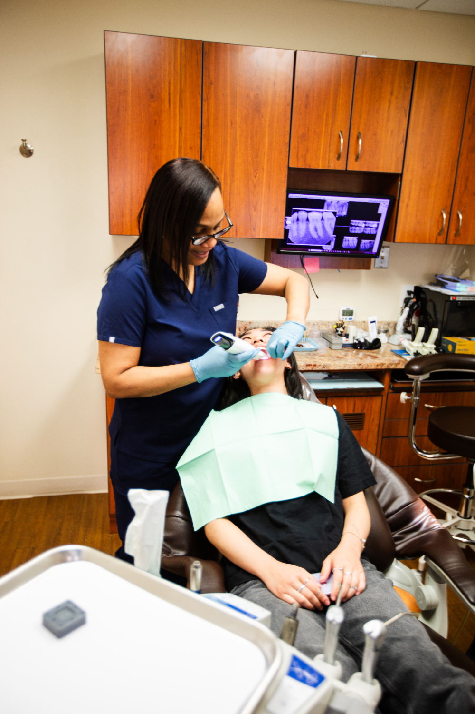

Comprehensive, Family-Focused Preventive Dental Care
A welcoming neighborhood practice where your routine dental checkups are never rushed. We provide proactive dental wellness for patients of all ages across Brooklyn, combining advanced diagnostics with a warm, personal touch.

Safeguarding Your Natural Smile
Comprehensive Oral Evaluations
Dr. Bellafiore, Dr. Black, and Dr. Baer look at the complete picture of your health, evaluating your teeth, gums, jaw joint movement, and performing thorough oral cancer screenings.
Professional Teeth Cleanings (Prophylaxis)
Our gentle hygiene therapies target hidden plaque and tartar accumulation to keep your breath fresh, eliminate surface stains, and safeguard you against early gum disease.
Low-Radiation Digital X-Rays
Utilizing advanced wellness imaging to detect decay forming between your teeth and trace hidden bone loss long before it develops into a costly or painful emergency.
Tooth-Colored Composite Fillings
Eradicate active tooth decay conservatively using metal-free, durable composite resin that bonds directly to your natural enamel and matches its exact shade.
Protective Crowns & Fixed Bridges
Repair deeply compromised, broken, or missing teeth with custom crowns and bridges structured to match your natural bite structure seamlessly.
Who Is Preventive Care For?
Preventative and general care is important for everyone! At CDBH, our preventative care is especially great for:
- Individuals looking for a long-term, judgment-free dental home in Brooklyn Heights.
- Families who want to synchronize routine dental cleanings and exams for multiple generations under one roof.
- Patients experiencing mild tooth sensitivity, localized gum bleeding, or bad breath who want to catch issues before they grow.
- Professional neighbors who value highly efficient, on-time appointments that fit smoothly into a busy work week.
Your Preventive Visit Experience
A Warm Welcome
Step into our comforting lobby where our team greets you upbeat and by name. Help yourself to our complimentary beverage bar featuring Keurig coffee, tea, hot cider, or hot chocolate before your visit.
Comprehensive Consultation
Our doctors sit down with you to listen closely to your history, goals, and any underlying dental anxieties. If you feel nervous, we offer comforting nitrous oxide or pre-appointment guidance so you always remain in total control.
Advanced Intraloral Diagnostics
We take a low-radiation full set of digital X-rays and execute a 3D digital wellness scan using our state-of-the-art 3Shape Trios Scanner. No gooey, messy putty trays are ever used.
Co-Diagnosis & Maintenance
Using high-definition intraoral camera captures, we review your oral health together on a screen to build a transparent, long-term care plan. We finish with a meticulous clean and polish to protect your enamel.
The Creative Dentistry Difference
30+ Years of Neighborhood Trust
Dr. Matthew Bellafiore has proudly cared for families in this community for more than three decades, bringing a rare level of clinical depth and stability to your primary care.
Multi-Lingual & Accessible Care
To ensure every neighbor feels thoroughly understood and heard, our professional team can seamlessly communicate your clinical options in English, Spanish, and Polish.
Operatories Built for Comfort
Every single one of our treatment rooms features large windows with local views, massaging operatory features, cozy blankets, and personalized music selections to keep you beautifully relaxed.
Honest, Transparent Care Without Insurance Headaches
We believe in straightforward dentistry with absolutely no pricing fluff. If you carry a dental plan, we work as an out-of-network provider accepting all PPOs, handling all complex claims and paperwork on your behalf to maximize your reimbursement (See our dedicated Insurance page for full details). We are also actively in-network with Delta Dental and CSEA. For neighbors completely without traditional dental coverage, you can instantly join our affordable In-House Membership Plan, which fully covers your annual cleanings, exams, and X-rays. We also partner with Cherry and Sunbit to offer flexible, budget-friendly monthly payment financing layouts (Explore options on our Financing page).
Frequently Asked Questions
How early should I arrive to complete my initial paperwork?
We respect your schedule and keep wait times minimal. Our initial check-in process is fully digital; we text your patient info and medical history forms directly to your personal mobile device to fill out securely before arriving. If you cannot complete them ahead of time, please arrive 15 minutes early to utilize our in-office iPads.
What is your office policy regarding missed appointments or rescheduling requests?
Because we dedicate an unhurried, substantial block of one-on-one time exclusively to you, we strictly require a 48 hour notice to cancel or reschedule an appointment to avoid a $125.00 fee. You can easily coordinate adjustments with our front desk via text, email, or a phone call.
Are your low-radiation digital X-rays safe for children and pregnant individuals?
Yes, absolutely. Our advanced digital X-ray technology uses significantly less radiation than outdated traditional film systems. They are entirely safe and clinically vital to map out hidden dental infections or decay beneath your old fillings.
What exactly is included in your private In-House Membership Plan?
Designed specifically for uninsured neighbors, our plan includes 2 recommended routine cleanings and evaluations per year, all necessary diagnostic digital X-rays, 1 emergency exam if an urgent issue arises, and a direct discount on further dental treatments.
Where is your building located, and is there public transit nearby?
We are located on the 3rd Floor of 185 Montague St, in a multi-story office building right adjacent to Chipotle. Take the elevator up and ring the doorbell. We are steps from the Borough Hall Station (2, 3, 4, 5 trains), Court Street (M, R trains), and have a CitiBike station directly outside our entrance.

Ready to Experience a Frictionless, Judgment-Free Dental Home?
Routine wellness shouldn’t come with waiting-room delays or lectures about your past habits. Step into a private sanctuary where your time is respected, your sensory comfort is guaranteed with massaging operatory chairs, and your checkup is entirely paper-free. Reserve an unhurried preventive cleaning and digital diagnostic session with our team today.